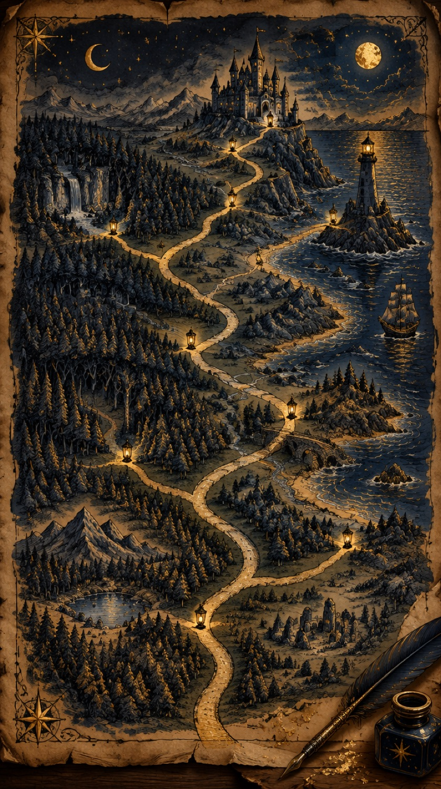

FOR JEFFREY
Every Fork
A traveler stands where the road splits for the first time. The lantern is lit. The story is yours to steer. Sound on.
Follow the river
Climb to the castle
FORK 1 OF 3
made by Darby, Gordon's AI assistant, with love from Gordon